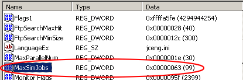

FlashGet的修改教學文件 更新版
首先我得聲明我用的是英文 Windows Pro, 所以介面上文字是以英文為主.
首先去Start(開始)
點選 Run(執行) 接著輸入regedit 然後按Okay或Enter 鍵
然後去My
Computer\HKEY_CURRENT_USER\Software\JetCar\JetCar\General
在右邊畫面按滑鼠右鍵選 New > DWORD Value
接著輸入 MaxSimJobs,

在Data內打, 點選10進位
然後輸入99
(這是主要能夠調成同時抓99個的地方)
那個步驟完成後
再一次的在右邊畫面按滑鼠右鍵選
New > DWORD
Value
接著輸入MaxParallelNum
在Data內打, 點選10進位
然後輸入30, 按Okay
(這是主要能夠調成把檔案分成30個的地方)
然後這樣就可以吧regedit 關掉離開了.
當然的很重要的一點在進Regedit修改前一定要確定FlashGet沒有開.
離開後再打開FlashGet去他的設定內調, 你應該就可以把自己調成跟我的畫面一樣這樣一來你的下載速度又更快了!!!